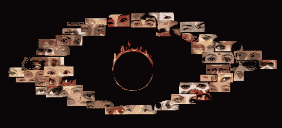

From artificial intelligence to the human collective
Recent research on artificial intelligence suggests a new
vision of the human collective, interpreted as an intelligent
learning system. Accordingly, it would be advantageous for
a human society to favor diversity among its members, and the creative
exploration of ideas.
Research on learning algorithms explores mathematical and computational
principles that could yield to artificial intelligence and explain in part
our own intelligence. Recent research on the mathematical difficulty of
learning complicated concepts suggests that a single human would have a
hard time to learn the kind of complex abstractions we take for granted.
Left alone, individual adaptation could settle in sub-optimal
solutions known as poor local minima. When stuck in a local minimum, we
stick to our current beliefs even if a substantial belief revision could
help us get a more predictive model of reality. This research also
suggests a well-known strategy to reduce the local minima difficulty:
parallel exploration of many different potential solutions, where
the best parts of the best solutions can be combined to yield
even better ones, as in genetic evolution.
How may these mathematical and computational considerations
cast an interesting light about human societies and human
intelligence? Genetic evolution, culture and individual learning are
adaptive processes working at different time scales, and the source of our
intelligence. The brain of a learning human reorganizes itself so as to
capture many concepts and abstractions through configurations of neural
connections. Each such configuration is a potential solution to the task
of creating a 'better' human brain. The adaptive processes that give rise
to a particular human brain conspire to explore the space of these neural
connections configurations. Here, each human represents a potential
solution, a configuration of neural connections. Language would be a
mechanism to recombine and propagate - through the exchange of ideas - the
good neural configurations discovered along the way. Culture
(as the set of all concepts exchanged among humans and passed
along to new humans) is a living and growing repository of
implicit information. It helps to wire a human brain (not always
in the best ways!) through education and immersion in
a culture. It allow us to take advantage of the good
ideas accumulated by the humans that preceded us.

From artificial intelligence to the human collective
This analysis opens the door to considerations beyond AI research:
philosophical, psychological, social and political considerations regarding
human societies. It suggests that one can view humanity as a learning
system, and that creativity and the diversity of ideas are crucial to
efficiently explore the space of ideas, and consequently the space of human
brains. In this context, as a society, we should probably invest more and
in a more diversified way in the exploration of ideas. Indeed, what could
look like a too risky exploratory choice for a single individual would turn
out to be a good strategy from the collective point of view: a single crazy
but successful idea out of a thousand, moving humanity forward, is enough
to justify the apparent waste of time of many marginals, researchers, and
other artists. This analysis also suggests the importance of an education
that encourages creativity and unorthodox explorations. It could also help
to give a meaning to our life, in the context of this immense collective
discovery enterprise.